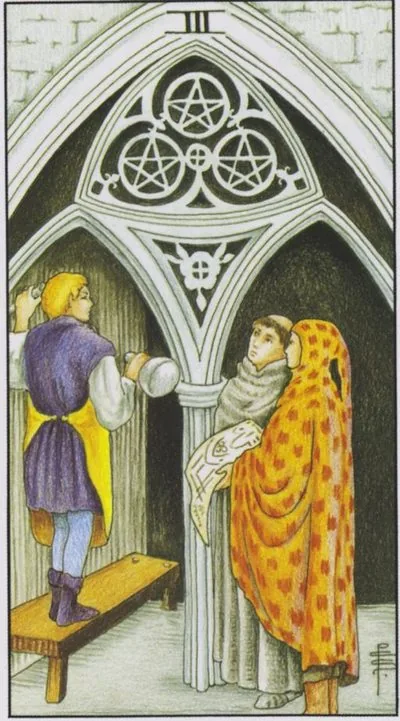

Minor Arcana · Pentacles
IIIThree of Pentacles
Joint construction: the skill of each participant is formed into a common plan, and the work for the first time receives public recognition.
Archetype and core meaning
Inside the unfinished cathedral, the mason puts the next blocks; next to the architect, the architect unfolds the blueprints, and the monk conveys the customer's wishes. Three experts, three roles, one idea, this is what is born that will outlive all the participants. The three pentacles are a card of professionalism: not genius aloneness, but the ability to work where your skill complements the other.
The important thing is that the boy at the stone is a student who learns by doing something, building a real temple, not by doing an exercise in a workshop. The card says that recognition comes to someone who works in plain sight and in harmony with others. Your skill is now building the material of something bigger than your personal career, and that's why it's growing so fast.
Daily life
Housework is more fun for the company: house cleaning by the whole family, repairs with friends, a holiday where everyone is responsible for their own. The card favors agreements: defined areas of responsibility, eliminated half of the disputes. Don't turn down the help of neighbors and relatives, working together brings family dinners closer together.
Work and career
The business situation is exciting: the team is in the works, the project is taking shape, the customer or the boss is noticing the contribution of you personally, and it's a great time to learn by doing this -- internship, certification, learning a new tool -- learning is built on experience and reinforced, and if you've earned a promotion, it's now the most likely thing to happen, and you can see your results with the naked eye.
Relationships
The couple starts building something that lasts forever: a common life, a big purchase, maybe a wedding, and the relationship is perceived as a shared project, where everyone has their own area of responsibility and the right to expertise, and the outside view helps, the counseling of a psychologist or a wise family council is not taken as an intervention, but as a missing blueprint.
Health
The best results come from working with a specialist: a coach will write a program, a physical therapist will put in the equipment, a doctor will write a treatment regimen, self-activity is inferior to a methodical partnership with a professional, group classes are more useful than single classes: the team spirit supports when self-motivation is lacking.
Spiritual meaning
Mars in Capricorn is a bellicose energy cast in granite form: an effort subordinate to design. On the subtler plane, the card is about initiation into craft: labor as a spiritual practice, every stroke of the incisor is prayer. The cathedral in the image is not accidental, it is the egregor of a common cause, within which participants grow faster than alone. Collaboration becomes initiation itself.
Coherence is lost: everyone has their own truth, someone else’s experience is devalued, and the common cause stalls in disputes and marriage.
Archetype and core meaning
Construction stopped: the architect argues with the customer, the mason works as he understands, and the walls no longer match the blueprint. The inverted three pentacles is a story about how capable people produce mediocre results because no one wants to hear the other. Experience is devalued, instructions are ignored, ambition is more important than business.
The card has a second face, the non-recognition: the person does quality work that no one notices, and gradually stops trying. Both situations are treated the same way: by returning to the arrangements of roles and respect for professionalism, one's own and another's, the cathedral is built by those who agree that he is superior to any of the builders.
Daily life
Home-based joint ventures are stuck: repairs are delayed because the masters are confused in their testimony; family plans are ruined by mutual "I decided so," children ignore requests because parents say the opposite. Put in a simple order: write down who is doing what and by what date.
Work and career
At work, there are conflicting roles: two people doing the same thing, nobody does the most important thing, criticism flies indiscriminately, maybe your contribution is appropriated by others, or management requires results without giving resources, quality is falling, customers are unhappy, minimum protection is to document agreements and record your contribution.
Relationships
Relationships become a platform for proving that the couple doesn't believe the advice, and the couple doesn't have enough of their own strength, one puts in, the other takes it for granted, and this skews the foundations sooner or later, and bring back respect for the partner's work, even if his methods are different from yours.
Health
The disparate attempts to improve one's health have zero: a diet without a regimen, exercise without a technique, pills without a scheme, worse than self-medication instead of a visit to the doctor, health now requires a systematic approach and a professional plan, otherwise efforts will not only be in vain, but also harmful.
Spiritual meaning
The energy of Mars without Capricorn form becomes a destructive noise: there is power, there is no direction. In practice, the card warns of circles where there is no agreement of intention: such a community does not strengthen, but extinguishes each participant. Check who you trust to work together, and do not give your power to those who do not respect your skill.
🌿 How the school reads this rank
The main idea
Two material worlds come together to create a specific product, the main theme being the division of labor and the understanding of roles.
How it manifests
In work, everyone does their own thing: the accountant counts, the manager negotiates, the master creates. In relationships, physical compatibility and role distribution are important. In development, the accumulation of practical experience.
The shadow side
Either the person goes to “my house with the edge” or starts teaching everyone around them how to work.
Keywords
product · hierarchy · division of labor · experience · physical compatibility
📜 In detail — from the rank lecture
Essence of the card
The interaction of two material worlds/forms produces a third concrete result: the product: the Masonic card (Wait of the Golden Dawn): the temple is built by three people — the mason puts a stone on the stone, the architect draws a plan, the client monk pays and knows the "why." Allegory of three degrees of one way: worker → master drafts → leader.
Upright position
- The main meaning is hierarchy and division of labor: each in his own business, "the accountant sits the numbers, the boss makes contracts"; not to get into another's business: "the monk will start teaching the mason to cut the stone, everything will collapse," "before the father in the hell." Without understanding the "who is in charge" of the interaction there is no: both are passive - nothing, both are active - conflict.
- School detail: The mason stands on a parole - above the boss and the client - a hint that the focus is on the material, here and now.
- Relationships: physical basis - sex, body, smell, taste, comfort; "if there is a physical match of partners, something will work out" Comfort is more important than appearance; traditional roles ("man controls, woman obeys - the house building concepts, but lead to real results").
- Work: value of those who create the product; experience ("Little experience - not enough, a lot of land - lived years are a plus"); increase in salary rather than position.
Negative meaning
• either “my hut with the edge – do not climb to me” (buried in submission), or excessive exposure – teaches another “how to roll up banks correctly” (he deliberately gives patriarchal examples: “the Tarot cards have a lot of patriarchalism”).
School emphases and distinctive points
- Astrology is a working reference to the system instead of Kabbalah/numerology; there are no specific deans in the lecture.
- Masonic decoding of the three pentacles and the "three degrees of personality development" - a signature course; plus an emphasis on paroxysm.
- The distinction of suits on one issue: physics - pentacles, passion and exchange of interests - wands, thoughts - swords, the background of mood - cups; two cups replace emotion, three - complements.
- Slavic series of sayings as mnemonics: "before my father in the heat", "my house with the edge", "not ours not yours", "who in the woods, who for wood", "friendship by friendship, and service by service", "mother do not grieve"; kitten Gav "let us be afraid together" → let us want together.
- Modern images: car theaters in the United States, a dry man in the kitchen, a tattoo old school (former hobby of the lecturer).
- Recommended related view – course of Yuri Khan “Alchemy of relations”.
Keywords
hierarchy (who is in charge); each in his own business; material product; physical basis of relations.